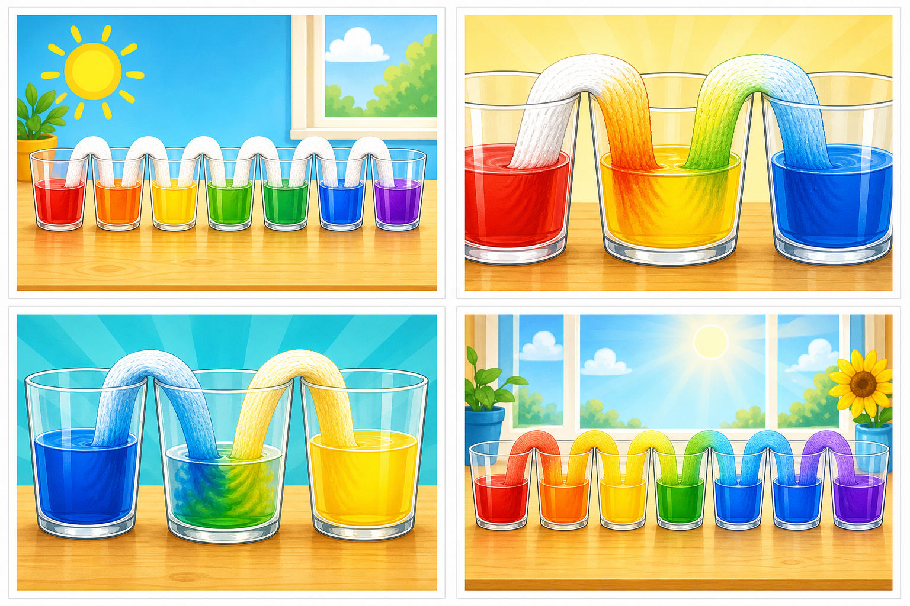

Little Lab Coats
🌈 Rainbow Walking Water 💧
Kindergarten Summer Wow Series — Lesson 2
☀️ Series: K Summer Wow📚 Grade: Kindergarten⏱️ Duration: 20–30 minutes + watch time🧪 Style: Summer science fun
🌈🥤🧻
It looks like the rainbow is sneaking across the table all by itself.
Summer wow goal: This one feels like table-top magic: the color moves slowly enough to watch and dramatically enough to wow.
🎯 Learning Objective
Students will predict what will happen when colored water travels through paper towels and observe how new colors appear.
💡 The Big Idea
Paper towels can pull water upward and across, so colors seem to “walk” from cup to cup and make new colors in the middle.
🔬 The Science
Kid version: “The paper towel drinks the water and carries it to the next cup.”
Parent move: keep the science sentence short, then let the child do most of the noticing out loud.
📦 Materials
- 6 clear cups
- 5 paper towel strips, folded lengthwise
- About 3 cups water total
- Red, yellow, and blue food coloring (4–6 drops of each)
- 1 tray or placemat
- Optional science notebook page for later observations
🃏 Vibrant Lesson Cards
Use the illustrated card sheet as a quick visual walk-through before you begin, then revisit the cards after the experiment so children can retell what happened.

Illustrated summer wow card set for Rainbow Walking Water.
1. Build the rainbow row
Set up cups in a line with some colored water cups and some empty cups in between.
2. Paper towel bridges
Paper towel strips connect each cup so water has a path to travel.
3. The water climbs
Children watch the color move up the towel and into the next cup.
4. New colors appear
Two colors meet in the middle and make a surprise color without anyone stirring.
🔬 Let’s Get Started
Step 1 — Set up the cups
Fill alternating cups with red, yellow, and blue water, leaving the cups between them empty.
Step 2 — Add the paper towel bridges
Place folded paper towel strips so each strip reaches down into two neighboring cups.
Step 3 — Make predictions
Ask children which empty cup will change first and what color might appear there.
Step 4 — Watch the water walk
Leave the cups in place and check every few minutes as the color climbs and crosses.
Step 5 — Name the new colors
When the colors meet, help children notice orange, green, or purple forming in the empty cups.
Step 6 — Tell the rainbow story
Invite children to explain the journey from one cup to the next using their own words.
💬 Discussion Questions
Did the water stay in one cup or move to a new one?Children should notice that the water traveled through the paper towel.
Which new color did you see first?Accept any correct observation based on the setup used.
Why do you think the empty cup did not stay empty?Look for simple ideas like “the towel carried the water” or “the water walked over.”
🚀 Keep the Wow Going
Try a second version with different cup spacing or a different kind of paper towel and compare how fast the colors move.
👩🏫 Parent Notes
- Lean into the language: use words like surprise, notice, compare, and tell me what changed.
- Keep it short: kindergarten attention stays stronger when the setup explanation is brief and the doing starts fast.
- Photograph the middle: the most useful parent-photo moment is usually when the reaction is happening, not just before it starts.
📝 Student Page
Name: ________________________________ Date: ________________
Part 1 — My Prediction
I think this experiment will __________________________________.
Part 2 — What I Observed
| What I noticed | My words or drawing |
|---|
| At the beginning | |
| During the wow moment | |
| At the end | |
Part 3 — Quick Science Thinking
Color the cups you started with and draw the new color that appeared in the middle.
Draw or write here ✏️
🔑 Parent Answer Key
Detach note: student wording may be simple. The goal is noticing, retelling, and connecting one change to the experiment.
What success looks like
- Students should note that water traveled through the towel.
- Students should identify at least one new mixed color.
- A successful explanation mentions movement from one cup to another, even in very simple wording.
Fast debrief sentence
“We saw a big change because the ingredients and setup made something visible happen right in front of us.”
☀️
Preview unlocked. Full lesson starts below.
You can read the overview, materials, and visual cards here. Unlock the full 4-week K Summer Wow Series for $20 to get all four complete lessons, printable student pages, and answer keys.